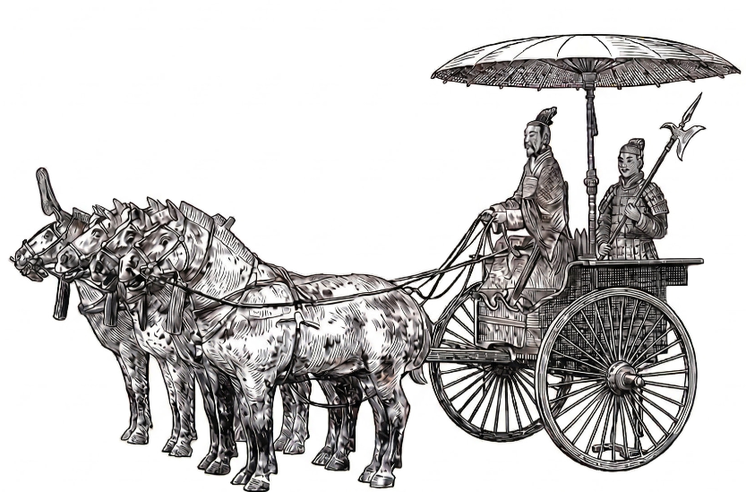
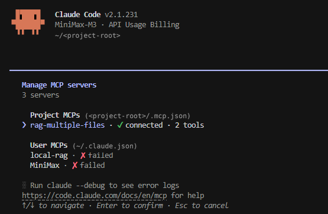
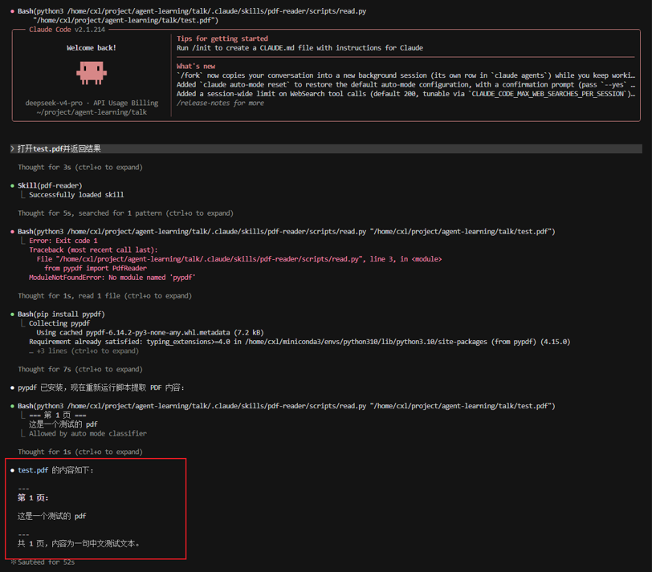
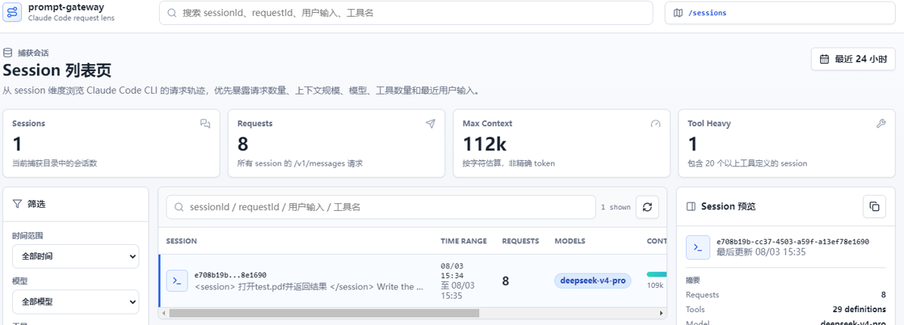
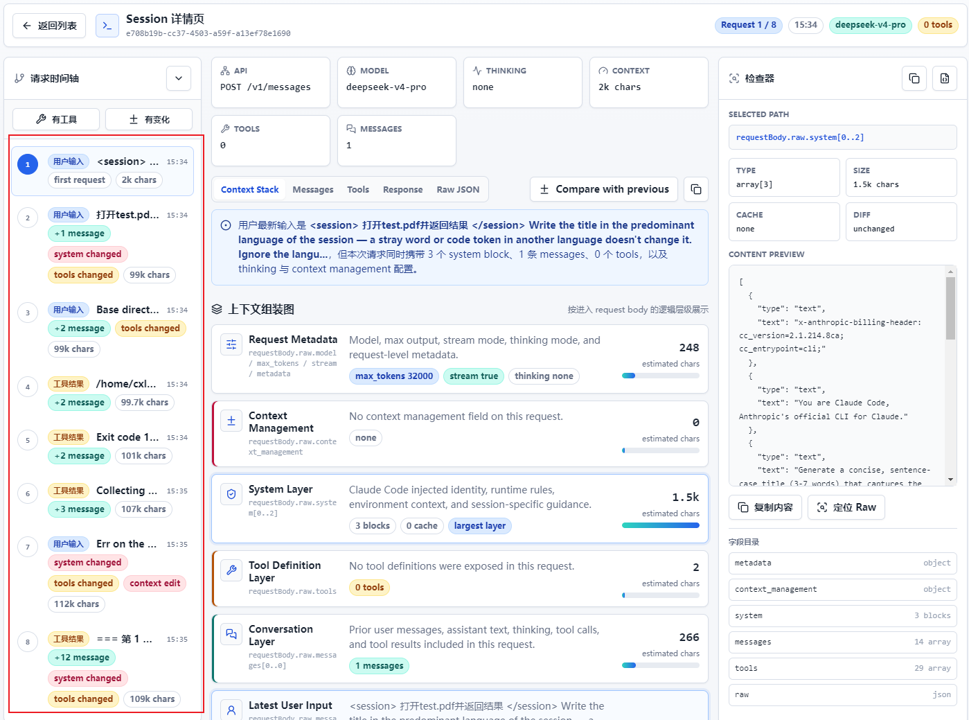
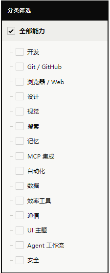
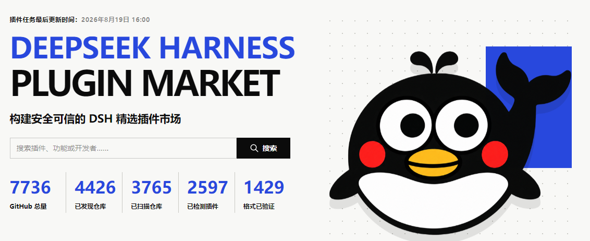
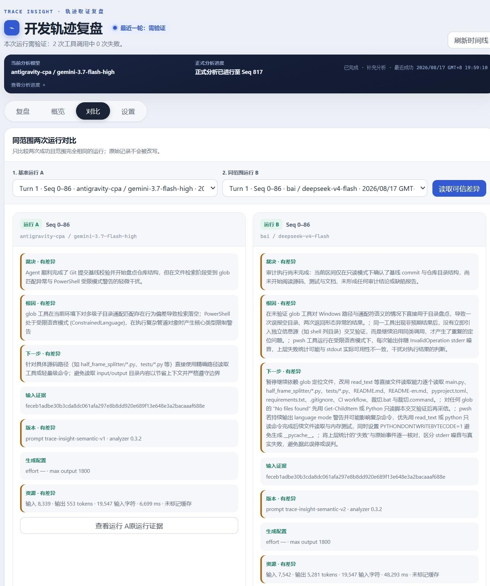

独立 windowSTATE| 维度 | 做法 | 注意 |
|---|---|---|
| 记什么 | 用户的偏好 · 项目的约定 · 失败过的教训 · 关键决策 | 不要记 raw token 流——记高密度、可寻址的笔记 |
| 怎么记 | 启动注入（AGENTS.md / CLAUDE.md）+ 滚动编辑（Agent 自我维护） | 写入时机：会话开始 / 关键决策后 / 任务完成 |
| 怎么治腐 | ① 上下文满了 → 压成摘要，重开一段继续干 ② 工具输出太长 → 塞进磁盘，要用时再读回来 ③ 一次加载太多 → 先挂名字，用到再展开 |
上下文是稀缺资源——塞得越满，模型越笨 |
启动时自动注入上下文 · Agent 自己维护
# 项目约定 - 使用 TypeScript + bun + zod - 日志统一用 pino，不要 console.log - 任何 dry-run 选项都默认开 # 测试 - 单元测试放 *.test.ts - 集成测试放 tests/e2e/ <!-- 每次 Agent 启动都会先读这里 --> <!-- 改完任何一段请先读这段提示 -->
grep 召回为零。语义检索正是 RAG 的主场。参考资料/ ← PDF_FOLDER 根目录 ├── paper-a.pdf ← 原始 PDF └── paper-a.index/ ← 自动生成 ├── index.faiss · 向量索引 dim=384 └── chunks.json · 片段文本 + 页码 $ PDF_FOLDER=<项目根>/参考资料 \ python3 -m ragmfiles.indexer 切片 → 向量化 → 落盘： all-MiniLM-L6-v2 · 384 维 FAISS IndexFlatIP · 归一化后≈余弦
{
"mcpServers": {
"rag-multiple-files": {
"type": "stdio",
"command":
"<conda>/envs/py311/bin/python3",
"args": ["-m", "ragmfiles.main"],
"env": {
"PDF_FOLDER":
"<项目根>/参考资料"
}
}
}
}

pdf-reader/ ├── SKILL.md # 技能说明（YAML + 工作流） ├── scripts/ │ └── read.py # 读 PDF 文本 └── references/ └── tips.txt # pypdf 安装提示 # SKILL.md 在根目录，告诉 Agent 怎么干 # 脚本 / 引用按需放在子目录
用 pdf-reader 打开 test.pdf--- name: pdf-reader description: 读取和提取 PDF 文件内容。 当用户需要读取 PDF 文件、提取 PDF 中的文本或分析 PDF 文档 内容时使用。 --- # PDF 读取技能 ## 工作流程 1. 获取用户提供的 PDF 路径。 2. 运行脚本提取文本：python3 …/read.py "<pdf路径>" 3. 如果脚本报错 → 读 tips.txt 中的提示并反馈给用户。 4. 将脚本输出的文本内容返回给用户。
#!/usr/bin/env python3
import sys
from pypdf import PdfReader
if len(sys.argv) < 2:
print("用法：python read.py <pdf文件路径>")
sys.exit(1)
path = sys.argv[1]
reader = PdfReader(path)
for i, page in enumerate(reader.pages):
print(f"=== 第 {i+1} 页 ===")
print(page.extract_text())
如果没安装 pypdf，执行： pip install pypdf # 这就是 SKILL.md 没覆盖到的 # 已知坑——放 references/ 兜底

/v1/messages 请求拦下来——逐帧展开 8 步内部循环；下一帧拆 8 步/v1/messages 请求拦下来、记下来，让你看清 Agent 在背后到底跟模型说了什么
↘


方法 确定性测试为主（修好失败的、不破坏已通过的单元测试）+ LLM rubric 评代码质量
代表 benchmark
SWE-bench：GitHub 真实 issue 修复评测
Terminal-Bench：端到端技术任务评测（编译 Linux 内核、训练 ML 模型）
⚠ 测试通过 ≠ 修好——伯克利用 pytest 钩子把测试结果强改成「通过」
方法 三维度并行打分——事务结果、轨迹效率、交互质量
代表 benchmark
τ-Bench：早期客服对话评测（事务结果 + 语气打分）
τ2-Bench：升级版——三维度全评，覆盖多轮、多情境、可中断的客服对话
⚠ 单维满分挡不住另两维塌方——语气漂亮但事没办成 / 事办成了但人被气走
方法 三维校验——每个结论能追到出处 + 关键事实一个不漏 + 源头一手不二手
代表 benchmark
BrowseComp：开放网络信息检索与多跳推理评测
设计哲学：答案藏在开放网络里，而非训练记忆里
⚠ 易于验证、难以解决——验证只需一眼，但要找到它得跨过几十次跳转
方法 双重校验——结果对不对 + 工具选对没（具体点击路径不管）
代表 benchmark
WebArena：浏览器内的真实网站操作评测
OSWorld：整台机器（桌面应用、文件管理）的操作评测
⚠ 工具选型决定结果——Claude for Chrome 例：维基 DOM，Amazon 截图
方法：单元测试 · 状态断言 · 静态分析
✓ 快 · 便宜 · 可复现
✗ 脆弱 · 主观任务做不了
方法：rubric 评分 · pairwise 比较 · 多 judge 共识
✓ 灵活 · 能处理开放性输出
✗ 存在噪声 · 需人工校准
方法：专家审阅 · 抽样检查
✓ 金标准 · 贴近专家判断
✗ 贵 · 慢 · 难规模化
| 场景 | 例子 | 指标 | 理由 |
|---|---|---|---|
| 代码生成 一次过为王 |
SWE-bench issue 修复 · Claude Code | pass@1 | 关心"首次补丁能否直接合入"，多次"至少一次成"在生产里意义有限。 |
| 采样型工具 多方案任选 |
brainstorm、代码片段、研究草稿 | pass@k (k>1) |
"出几个方案、有一个能用就行"本身就是合理的产品形态。 |
| To-C agent 每次都得靠谱 |
客服代理、电商订单、日程助手 | pass^k | 每次都期望"没掉链子"——单次 75% 到 pass^3 只剩 42%。 |
| 高频长链路 一致性极高 |
金融、医疗、Computer use 流水线 | pass^k (k 大) |
多步多次试次串起来——pass^k 反映"端到端不出岔子"。 |


